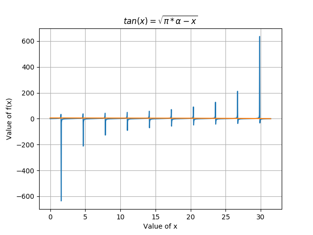
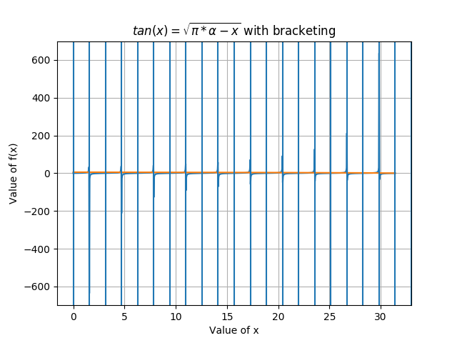
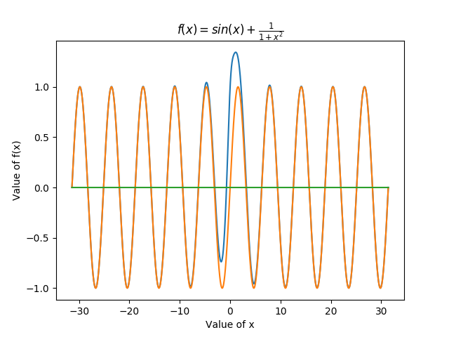
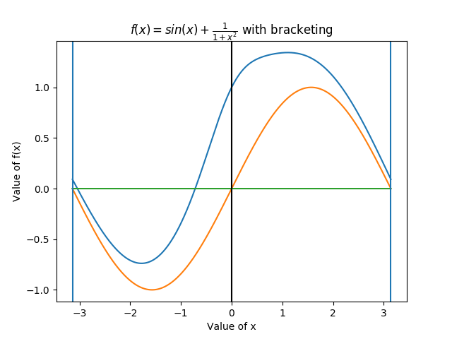
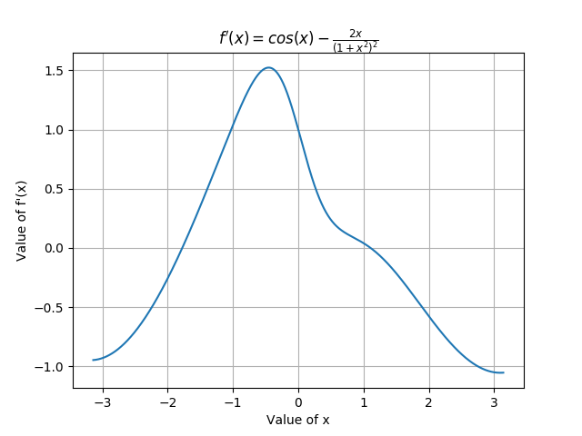

EE5011: Computer Methods in EE
Minimization and Root Finding in 1D
Rohan Rao (EE14B118)
1 Finding roots in 1D
Finding positive roots of:
tan(x) = √(πα − x)
for any positive alpha.
1.1 Plot LHS and RHS

Several positive roots exist for α = 10, and they can be seen by zooming in. The domain of the function (for positive roots) is x ∈ [0, πα].
1.2 Bracketing the roots

The roots can be bracketed using the intervals [0,pi/2], [pi,3pi/2], ... Which is clear from the nature of the tan(x) function, and the graphs above. The code snippet for the above is as follows:
#q2: Finding roots in 1-D
#Equation: tan(x) = sqrt(pi*alpha-x), alpha > 0
def f1(x):
return tan(x)-sqrt(pi*al-x)
#bracketing intervals: [0,pi/2], [pi,3pi/2], ...
al=10
x=linspace(0,al*pi,1000)
plot(x,tan(x))
plot(x,sqrt(pi*al-x))
for i in range(0,int(al)+1): #bisection
axvline(x=i*pi)
axvline(x=i*pi+pi/2)
grid()
show()
1.3 Root Finding
1.3.1 Bisection method
The bisection method is the simplest method to obtain roots after having bracketed them. It is not the most effective, but will usually give a reasonable solution if given a good bracketing interval. The algorithm code is below:
def bisection(fd,a,b,tol=1e-15,NMAX=1e4):
# a < b and f(a).f(b)<0
N=1
while(N<NMAX):
c=(a+b)/2
if fd(c)==0 or (b-a)/2 < tol:
print N
return c
N=N+1
if(np.sign(fd(c))==np.sign(fd(a))):
a=c
else:
b=c
return a,b
The function has a tolerance parameter, and a max_iterations parameter.
Running on f(x):
xpos=bisection(f1,0,pi/2)
print xpos,f1(xpos)
OUTPUT: 51 #number of iterations
1.39028656844 1.86517468137e-14 #x_pos, value of fn.
This shows that bisection method requires 51 calls to reach the minima between 0,pi/2.
1.3.2 Secant method
The secant method requires certain properties from the function as well as from the bracketing points. In case these are not met, the output may not even be convergent. In this case, I had to use a few iterations of bisection method before passing the smaller interval bracket to the secant method.
def secant(f,x0,x1,tol=1e-15):
x=[x0,x1]
while(abs(x[-2]-x[-1])>tol):
val=x[-1]-f(x[-1])*(x[-1]-x[-2])/(f(x[-1])-f(x[-2]))
x.append(val)
return x[-1],len(x)
#Secant method requires more accurate bracketing of the minima, so use bisection
#for a few iterations and then secant on the interval thus obtained
x0,x1=bisection(f1,0,pi/2,NMAX=6)
print x0,x1
xpossec=secant(f1,x0,x1) #required 9 iterations
print xpossec, f1(xpossec[0])
OUTPUT: 1.37444678595 1.42353417116 # new bracketing
(1.390286568444755, 9) -1.7763568394e-15
1.3.3 Brent method
Brent’s method is a minimization algorithm that will attempt to obtain the minimum value of the function over the given interval (and maybe beyond it as well). For it to work correctly, it is better to take the absolute value of f1(x) so that the minimum value is zero, and Brent’s method identifies it correctly.
#Brent’s method (minimizes, so absolute value of the fn can be passed)
from scipy.optimize import brent
x1,fx1,b,c=brent(f1_abs,brack=(x0,x1),full_output=1,tol=1e-15)
print x1,fx1,b,c #required 32 iterations
OUTPUT: 1.39028656845 1.21906040818e-10
1.3.4 Newton-Raphson method
The Newton-Raphson method depends on a single point of the function and builds an improved estimate of the root using the derivative of the function. This requires the derivative to be known, which is not always the case. The lack of a bracketing interval also means that slight differences in starting position may mean a very different root obtained (although they will all be roots of the function).
#Newton-Raphson method
def f1der(x):
return 1/(cos(x)**2)+0.5/sqrt(pi*al-x)
def NR(f,fder,init,tol=1e-15,NMAX=1e4):
x0=init
x1=x0-f(x0)/fder(x0)
N=0
while(abs(x1-x0)>tol):
x2=x1-f(x1)/fder(x1)
x1,x0=x2,x1
N=N+1
if(N==NMAX):
return None
return x1,N
xnr=NR(f1,f1der,0)
print xnr,f1(xnr[0])
#highly optimal, required just 6 iterations, but it gave a value away from the first
#The value varies depending on the starting position...
OUTPUT: (10.77890133188453, 6) 1.50990331349e-14
2 Finding multiple roots in 1D
f(x) = (x − 2 + ϵ)(x − 2 − ϵ)(x − 2)
We can use one of the methods above to obtain any of the roots. Since bracketing is the simplest technique, the code below uses it to find any one root, with the initial bracket set to [1,3].
def f3(x,ep=1e-3):
return (x-2+ep)*(x-2-ep)*(x-2)
xpos=bisection(f3,1,3)
print xpos,f3(xpos)
OUTPUT: 1
2 -0.0
xpos2=bisection(f3,1,xpos-5*np.finfo(float).eps)
print xpos2,f3(xpos2)
OUTPUT: 50
1.999 -6.67868538251e-22
xpos3=bisection(f3,xpos+5*np.finfo(float).eps,3)
print xpos3,f3(xpos3)
OUTPUT: 50
2.001 -1.10848830115e-21
This method will be able to identify roots that are within 5*eps of the repeated root, where eps is the machine precision. I have used the multiplier 5 because it is necessary to ensure that adding such a small number is enough to create a new binary representation that is different from xpos. The product of function values at [1,xpos-delta] and [xpos+delta,3] is negative, meaning there is a root in each interval. This can be repeated until no more roots/brackets can be found.
3 Minimization in 1D
f(x) = sin(x) + (1)/(1 + x2)
3.1 Plot the function
#q4: minimization in 1-D
# f(x) = sin(x)+1/(1+x^2)
N=10
def f(x):
return sin(x)+1.0/(1+x**2)
x=linspace(-N*pi,N*pi,10000)
y=linspace(-2,2,50)
plot(x,f(x))
plot(x,sin(x))
plot(x,np.zeros(len(x)))
show()

The function is somewhat irregular around x=0, but then quickly reverts to sin(x) behaviour... This means that the minima are around -1. If the function is positive between two zeros of sin(x), it is not necessary to search for minima there.
3.2 Bracket the minima between zeros of sin(x)
for i in range(-N,N+1):
if i%2==0:
axvline(x=i*pi,color=’k’)
else:
axvline(x=i*pi)
show()
This shows that the minima can be bracketed by the points [(2N-1)*pi,2*N*pi], whereas maxima could be bracketed using the points [2N*pi, (2N+1)*pi].

The above figure is for N=1 (to show the regions where it is bracketed).
3.3 Golden Section Search for minimum
gr=(math.sqrt(5)+1)/2
def gss(f,a,b,tol=1e-15):
count=0
c=b-(b-a)/gr
d=a+(b-a)/gr
while abs(c-d)>tol:
if f(c)<f(d):
b=d
else:
a=c
count+=1
c=b-(b-a)/gr
d=a+(b-a)/gr
print count
return (a+b)/2
print "x=",gss(f,-pi,0)
OUTPUT: x= 71
-1.77769659063
The golden section search allows us to obtain the minimum value of the function on a bracketed interval by using the golden section for obtaining a new interval. This required 71 iterations but converged to the correct minimum.
3.4 Brent’s method
Brent’s method requires 25 fn calls and 24 iterations whereas GS reqs 71 iterations. Brent’s method thus provides supralinear convergence when possible and robustness otherwise (valid bracket maintained).
from scipy.optimize import brent
fx,x1,b,c=brent(f,brack=(-pi,-pi/2,0),full_output=1,tol=1e-15)
print brent(f,brack=(-pi,-pi/2,0),full_output=1,tol=1e-15)
OUTPUT: (-1.7776966103425036, -0.7382996253794889, 24, 25)
3.5 Dead Zone for root
def f1(x):
return f(x)+1e-15
fx2,x2,b,c=brent(f1,brack=(-pi,-pi/2,0),full_output=1,tol=1e-15)
print brent(f1,brack=(-pi,-pi/2,0),full_output=1,tol=1e-15)
print "x=",gss(f1,-pi,0)
print "x1-x2 = ",x1-x2
OUTPUT: (-1.7776966103425036, -0.7382996253794879, 24, 25)
x= 71
-1.77769659063
x1-x2 = -9.99200722163e-16
This means that the dead zone is approximately of the order of the computer resolution itself. In general this should depend on the second order derivative of the function, and how quickly a change in x would manifest as a change in y.
3.6 Differentiate and find zero

The above plot is of the function derivative from [ − π, π]. It can be seen that it is zero at two points, the maxima and minima of the function over this interval. Using a simple bisection based root finding algorithm, requires less iterations than the golden section method, but is worse than Brent’s method. Information about the derivative may also not be known. The accuracy is also lower than the other methods, both for x and f(x).
def fd(x):
#derivative of the function f(x)
return cos(x)-2*x/((1+x**2)**2)
plot(x,fd(x))
grid()
show()
pos=bisection(fd,-pi,0)
print pos,fd(pos),f(pos)
OUTPUT: 52
xpos = -1.77769661079
f’(xpos) = -7.49400541622e-16
f(xpos) = -0.738299625379